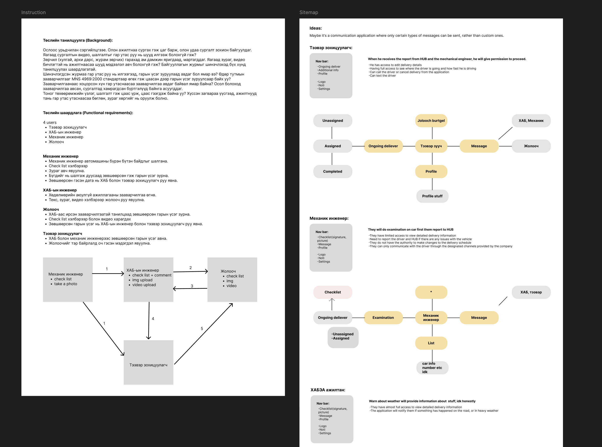
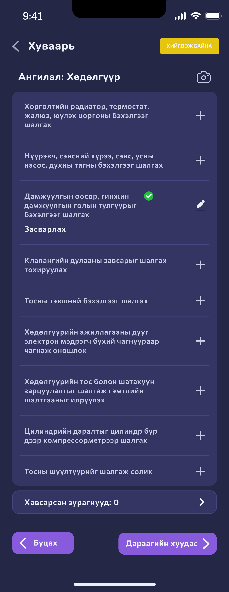
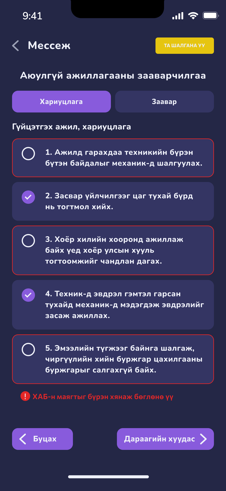
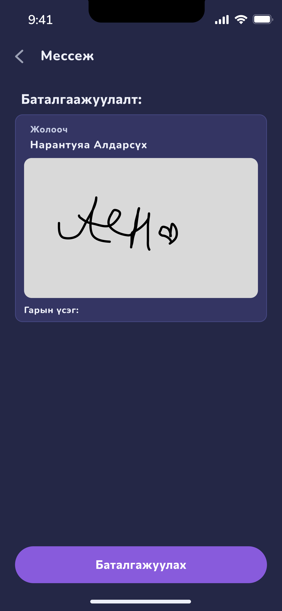
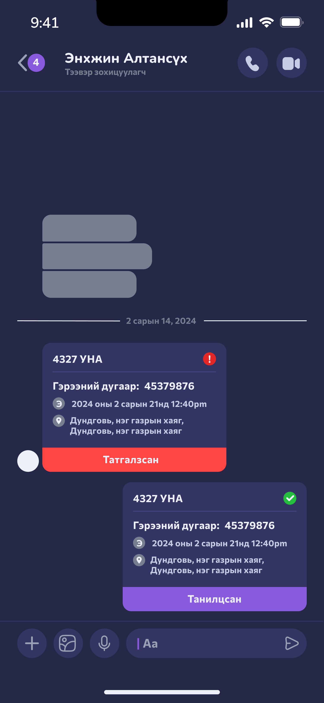

A safety-compliance app that took a transport fleet off paper
- Хамрах хүрээ
- Бүтээгдэхүүний дизайн
- Үүрэг
- UI/UX дизайнер
- Онцлог
- Анхны UI/UX төсөл
- Он
- —
The problem
Ослоос урьдчилан сэргийлэх ажил бүхэлдээ цаасан дээр явдаг байв. Сургалтыг олон удаа давтан зохион байгуулна, өдөр тутмын зааварчилгааг MNS 4969:2000 стандартаар цаасан дээр гарын үсэг зуруулж авна, тоног төхөөрөмжийн үзлэгийн хуудас овоорно — тэгээд гээгдэнэ.
Осол гарсны дараа хамгийн түрүүнд асуудаг зүйл нь: хэн зааварчилгаа авсан бэ, хэн сургалтад хамрагдсан бэ. Хариулт нь цаасан дунд байдаг. Асуудал нь дизайны биш, бүртгэлийн асуудал байв.

Four roles, one chain
Дөрвөн хэрэглэгч, тус бүр өөр интерфейстэй: механик инженер автомашиныг чеклистээр шалгаж зураг авна; ХАБ-ын инженер зааварчилгааг текст, зураг, видеогоор өгнө; жолооч түүнийг уншаад гарын үсэг зурна; тээвэр зохицуулагч хоёр зөвшөөрлийг хүлээж авч байж жолоочийг замд гаргана.
Гол шийдвэр нь эндээс гарсан: энэ нь дөрвөн тусдаа апп биш, нэг гарын үсгийн гинж. Зөвшөөрөл бүр дараагийн хүнийг нээдэг тул интерфейс бүр өөр харагдавч нэг л төлөвийг хуваалцана.


Mechanic
Механик инженер автомашины бүрэн бүтэн байдлыг чеклистээр шалгаж, зураг хавсаргаж, бүгдийг дуусгасны дараа зөвшөөрсөн гэж гарын үсэг зурна. Тэр өгөгдөл ХАБ-ын инженер болон тээвэр зохицуулагч руу нэг дор очно.
Хүргэлтийн мэдээллийг зөвхөн харах эрхтэй — хуваарь өөрчлөх эрхгүй. Энэ хязгаарыг интерфейс дээр нь шууд харуулсан.
Driver
Жолооч ХАБ-аас ирсэн зааварчилгааг чеклист, зураг, видеогоор нь танилцаад зөвшөөрсөн гарын үсгээ зурна. Зааварчилгаанаас хоцорсон хүн утаснаасаа өөрөө авч болно — урьд нь энэ нь дахин цуглуулах шалтгаан байсан.
Гарын үсэг нь ХАБ-ын инженер болон тээвэр зохицуулагч хоёр луу зэрэг очно. Осол гарсан тохиолдолд хэн, хэзээ зааварчилгаа авсан нь хайх зүйлгүй бэлэн болно.


Coordinator
Тээвэр зохицуулагч ХАБ болон механик инженерээс зөвшөөрсөн гарын үсгийг хүлээж авсны дараа л жолоочид «тэр байрлалд оч» гэсэн мэдэгдэл илгээнэ. Түүнд хүргэлтийн мэдээллийг засах бүрэн эрх бий.
Амжилттай замын хажуугаар амжилтгүй төлвүүдийг бас зурсан: хүсэлт татгалзсан, үзлэг унасан, мэдэгдэл хүрээгүй. Эдгээрийг хойш нь нэмэхгүй, эхнээс нь оруулсан.